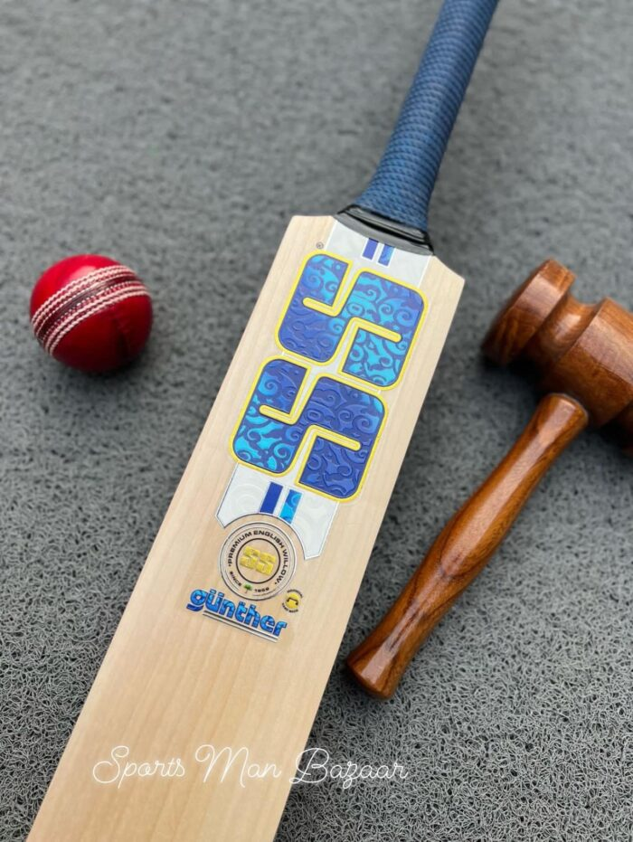

SS Gunther Limited Edition English Willow Grade 1 Cricket bat
Rs5000

Real hard ball bat with ball
Rs5000
If you are looking for high quality MB Malik bats, you can see our site Sports Man Bazar (SMB), which has a good collection of MB Mb Malik bats. We specially designed these bats for players’ comfort. You can easily purchase these bats from our official website. There are several reasons why you should buy our bats. Here are some of them. – We make MB malik cricket bats of high-quality materials. – we make them durable and perfect for players.
MB Malik bats are available here in a range of colors and designs. In addition to being durable and comfortable, our cricket bats will give you a lot of enjoyment during your cricket games.
Our MB Malik cricket bats are ideal for power-hitting players. Our powerful profiles and outstanding willow quality will give you the edge you need to easily clear boundaries. Our cricket bats are available at affordable prices. You can choose one for yourself or your entire team. And you can even choose an MB Malik pro edition bat for your practice session. You’ll never regret purchasing our cricket bats.
Our MB Malik cricket bat has the same great features as the Pro model but is priced a bit more affordable. We offer MB Malik Cricket Bats with lifetime warranties, so you’re guaranteed quality for a long time.
If you’re looking for a high-quality cricket bat, you’ve probably heard of MB Malik. Our MB Malik cricket bat is the best choice if you’re looking for a bat that has a good balance of quality and durability. We offer MB Malik cricket bats in wide varieties, so it depends on you to choose the right one for your needs. Luckily, several brands make great bats, including the famous Lala bats edition.
Our MB Malik bats are made for power-hitting players. Our MB Malik cricket bats come with powerful profiles and impressive willow quality, making them great for clearing boundaries and getting runs. Whether a beginner or an experienced player, our MB Malik cricket bats are great for boosting your game and improving your confidence. Whether a club player or a professional cricketer, our MB Malik bats are available at reasonable prices.
Mb Malik bats have become some of the most popular cricket bats in the world. Our MB Malik pro edition bats are made with imported woods from England and are endorsed by many of the best players in the game. MB Malik bats are popular in many other countries. Many cricket players swear by their MB Malik cricket bats. If you’re in any city, you’ll be glad to know that you can purchase our bats without extra costs.
If you’re looking for a new bat, you’ve come to the right place. Consider our MB Malik Lala bat if you’re looking for a new bat for your next match. It’s made from the finest English willow and produces an amazing ping. Many international players, including Shahid Khan Afridi, use this cricket bat.
This cricket bat was designed specifically for the Pakistan superstar Shahid Afridi. We offer it with a large profile, thick edges, and a sweet spot in the mid-to-high blade. We also offer free shipping and returns policy recommended for players at all levels. But how do you decide which cricket bat is best for you? Our cricket bat is worth a look if you’re serious about your game.
Our MB Malik Lala bat is an excellent cricket bat for any level. Our bat is highly versatile, offering perfect balance, excellent pick-up, and an unreal ping off the end. International players have used it for years. We make it with a wooden hammer and linseed oil, which is applied using a ball mallet. After it’s dried, the bat is smooth and durable.
We have released the MB Malik pro edition cricket bat. It features a striking red, white, and black color scheme and a distinctive 3D sticker on the barrel. Our bat has a round or oval handle and has a grain age of 7 to 9. It weighs approximately 1200-1250 grams. The grain age of our cricket bat is 7.
Our MB Malik Cricket Bat is endorsed by Muhammad Hafeez and is a must-have for any cricket fan in Pakistan. Our cricket bat has a robust profile, a smooth pick-up, and a large sweet spot. Our bat also has the perfect balance and shape. In addition to our MB Malik cricket bat is used by several international players. It is easy to see why so many cricket players endorse this bat.
The MB Malik pro edition cricket bat is made from grade two English Willow.The quality of our bat is exceptional. Our bat features a beautifully balanced pick-up with an extended middle, which aids boundary shots. These features make the MB Malik pro Edition Cricket Bat a must-have for any cricketer, regardless of skill level.
Our Sports Man Bazars MB Malik Pro Edition Bat is a smooth pick-up, ideal balance, and a strong profile. Our MB Malik pro Edition Bat is an excellent cricket bat with English willow wood and a sweet spot bigger than average. Our MB Malik bats also have an extended middle, which aids boundary shots. Several prominent cricket players have endorsed it. We also offer a strong profile and an excellent pick-up. Features of our MB Malik cricket bat make it one of the best cricket bats on the market.
Consider our MB Malik Pro Edition Bat if you’re looking for a cricket bat designed for batting power. Our bat is made with a selection of premium materials and features a large sweet spot area. It also features a slight curve profile and a massive edge for a solid, accurate swing. Among the many features of our cricket bat are excellent pickup and balance, as well as a green sticker that helps you distinguish it from the rest. Many players at the international level use the MB Malik cricket bat. Oiling the bat takes five days and involves a wooden hammer ballet and a ball mallet. The first layer of Linseed oil is applied, followed by a light knocking.
Our MB Malik cricket bats are lightweight, making them comfortable to hold. If you are an amateur cricketer, our MB Malik Pro Edition Bat will suit your needs and fit your budget perfectly. Our MB Malik Pro Edition Bat is made of grade 2 English Willow, making it an excellent choice for cricket players who don’t want to spend a lot on a cricket bat.


.jpeg)
.jpeg)
.jpeg)
.jpeg)